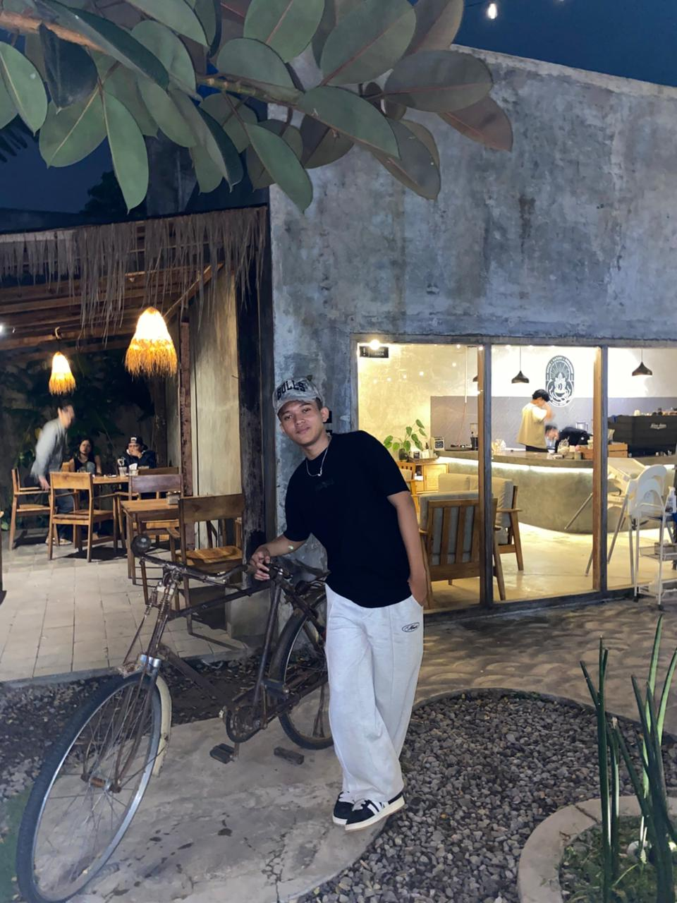

| CURICULLUM VITAE |
| Nama |
: |
Mochamad iqbal aditya anugrah |
 |
| Jenis Kelamin |
: |
Laki-laki |
| Agama |
: |
Islam |
| Alamat |
: |
Kp Babakan sinyar |
| E-mail |
: |
iqbaladitya150007@gmail.com |
| Tempat Tanggal Lahir |
: |
Garut/15/08/2007 |
| Nomor Telepon |
: |
088971837130 |
| PENDIDIKAN FORMAL |
- TK Al falah (2013-2016)
- SDN 1 Karangmulya (2016-2019)
- SMP 1 kadungora (2019-2022)
- SMA 2 garut (2022-2025)
- Universitas Pasundan (2025-Sekarang)
|
| SOFT SKILL |
- Bekerja keras
- Komunikasi yang baik
- Manajemen waktu
- Beradaptasi dengan cepat
|
| BAHASA |
- Bahasa Jepang (Aktif)
- Bahasa Sunda (Pasif)
- Bahasa Francis (Pasif)
|
| HOBI |
 |
 |
 |